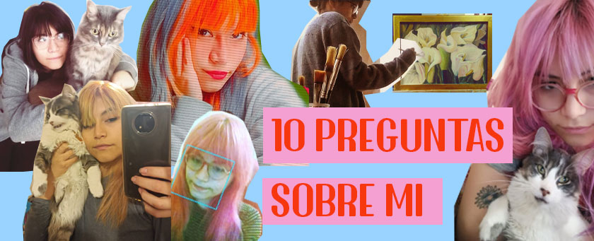

- ¿Cuál es tu color favorito?
Mi color favorito es el rosado, casi simepre llevo el color de cabello rosado y mi cuarto es todo rosa. ¡Amo el rosado!
- ¿Cuál es tu animal favorito?
Mi animal favorito son los gatos.
- ¿Cuántos tatuajes tienes?
Tengo 4 tatuajes, todos son flores, en realidad no tienen mucho significado más allá de que amo las flores
- ¿Cuántos hermanos tienes?
Tengo 3 hermanos, yo soy la menor :3
- ¿Cuál es tu plato favorito?
Mi plato favorito son los tallarines verdes con un filete de soya broster
- ¿Qué carrera estudias?
Estudio Dirección y Diseño Gráfico, y este ciclo termino la carrera, super emocionada!
- ¿Algo curioso sobre ti?
Amo los sitcoms, siempre tengo que estar viendo alguno, pero mi favorito es FRIENDS
- ¿Género musical favorito?
Siempre cambió en esto, pero por ahora me gusta el indie pop
- ¿Cuantas mascotas tienes?
Tengo dos, Elisa de 13 ños y Hanky Panky de 1 añito, los amo mucho y me gustaría poder adoptar más cuando algun día me independice
- ¿Pelicula favorita?
Eterno resplandor de una mente sin recuerdos, amo esta peli.